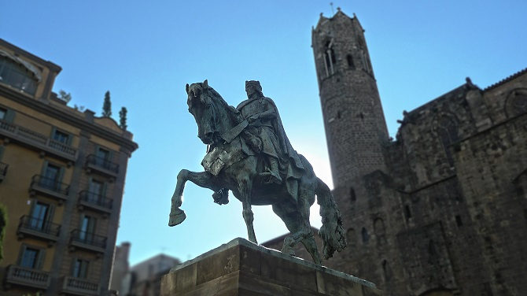
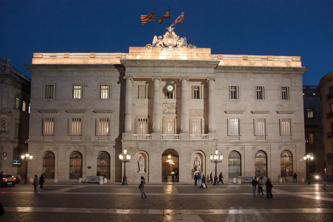
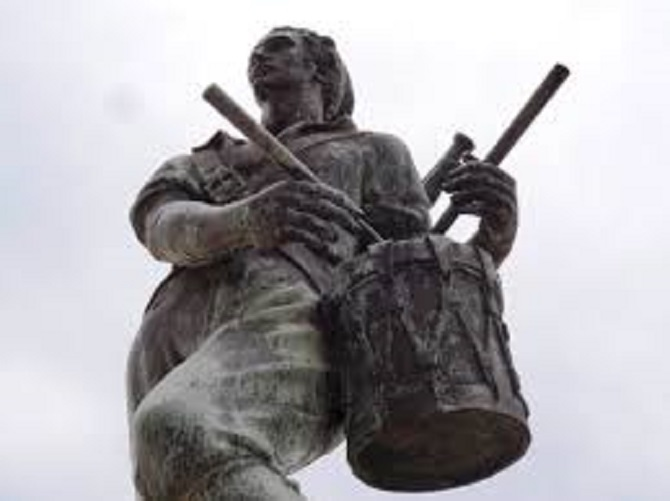
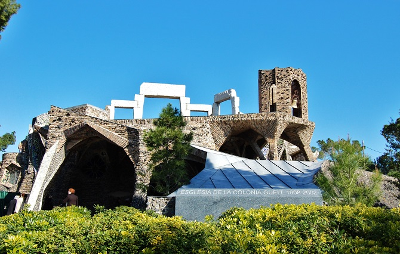
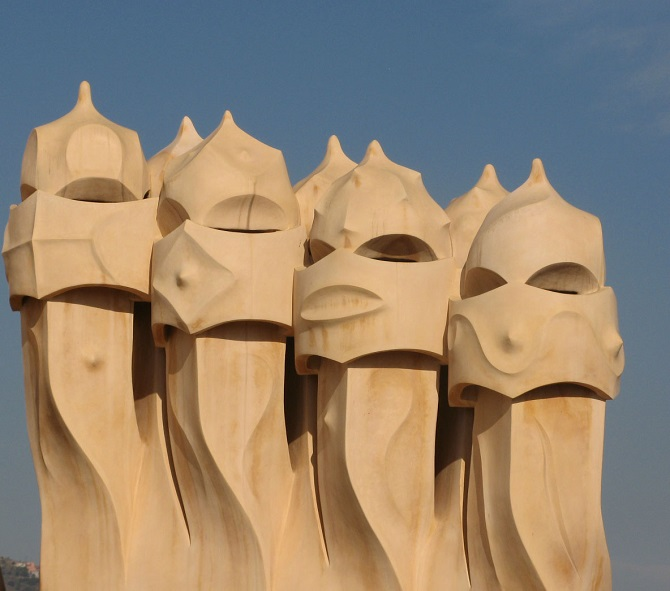

Welcome to my About page.
Figures of the history of Barcelona
Ramón Berenguer: mention Ramón Berenguer in Catalan history is like saying Enrique or Carlos in the English one. We find this name up to 7 references and many others with his alternative Berenguer Ramón.
All of them owe their roots to Berenguer Ramón I, count of Barcelona whose title was inherited his children along with the variant of his name (so his children were Ramón Berenguer I Berenguer Ramón II). But the most emblematic one whose statue we can see from our apartment in Jaume I, corresponds to Ramon Berenguer III, who was the first to determine the borders of the growing Catalan-Aragonese kingdom.

Jaume I, “The conqueror”: the king of kings in what refers to Catalan culture, was the heir of the House of Aragon among other fiefs, reason why he was destined from the beginning to manage the territories of the region under the influence that Ramon Berenguer III secured, which for the moment were no more than the kingdoms of Aragon, Valencia and Mallorca.
After his reign, the Catalan-Aragonese borders extended to the rest of the Balearic Islands and the regions of the Cerdanya, Roussillon and French Provence, wich today they give name to multitude of streets of the emblematic district of Eixample Barcelonés. Hence his nickname as “conqueror”, the numerous streets and squares dedicated to him, as well as his presence in a niche on the facade of the Barcelona city hall.

The Drummer of the Bruc: During the War of Spanish Independence, when the Napoleonic troops advanced from the Pyrenees to conquer the peninsula, a young man from the Bruc village of only 1000 inhabitants, attracted the attention of the whole country and became a hero by getting the French troops back their position with the simple replicate of his drum, which frightened the attacking army to think that it was the sound of a more powerful battalion.

Eusebi Güell: surely on your visit to Barcelona you will not hesitate to admire beauties like the Palau or Park Güell, whose surnames refer to the patron that made possible its construction and of many other modernist constructions.
Eusebi Güell, in addition to artistic patronage to the most emblematic of Catalan architects, was the fruitful entrepreneur whose surname alongside the Batlló, supposed a before and after in the flourishing economy of Barcelona and its growing bourgeoisie during the industrial revolution.

Antoni Gaudí: the sponsored of Eusebi Güell and his family was none other than the brilliant architect to whom we also owe the Sagrada Familia, La Pedrera, Bellesguard Tower or Vicens House, and which stood out above a tough competition where other contemporaries as Domenech i Montaner gave to the city jewels like the Palau de la Música or the Hospital de Sant Pau.
Gaudí, despite being a claimed and successful architect from the end of the nineteenth century until his death, trampled by a tram, in 1926, never lived with a high status. In fact his corpse after the outrage was not identified until a few days later, when was confused with a beggar.

Juan Antonio Samaranch: the city not only owes to this dear Catalan politician an Olympic museum in Montjuïc, but the event par excellence that brought to the city a new reordering, enviable beaches that had remained hidden behind the train tracks, the revaluation and beautification of Montjuïc and an unprecedented media exposure: the 1992 Olympic Games.
Thanks to the fact that at that time he held the presidency of the International Olympic Committee, he was able to promote and relaunch the Olympic bid that would give the city a world projection that still lasts, as well as an opening after years of dictatorship that put Barcelona on the map of the worldwide trends.
Notable architects, politicians, historians, kings… there are numerous references that you can enjoy in a pleasant walk through Barcelona. We invite you not to let them pass unnoticed and to enjoy, in addition to the excellent weather and leisure offers, the culture and history of this amazing city.